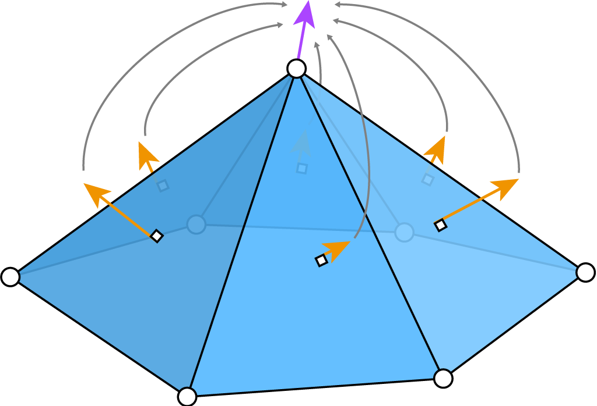
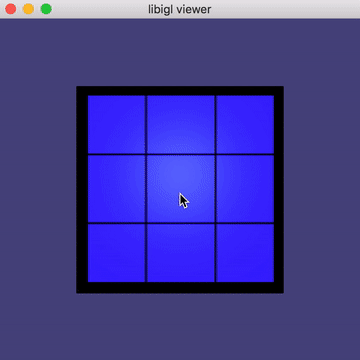
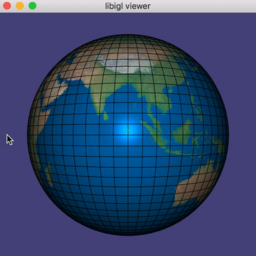
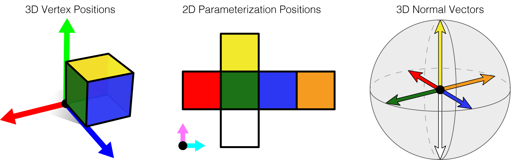
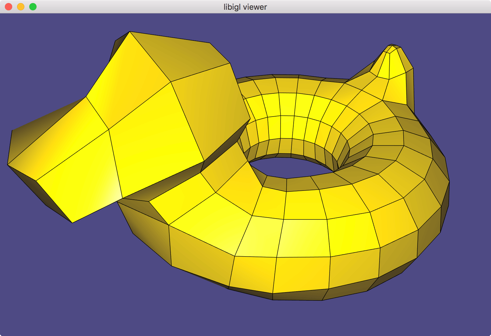

\(\newcommand{\A}{\mat{A}}\)
\(\newcommand{\B}{\mat{B}}\)
\(\newcommand{\C}{\mat{C}}\)
\(\newcommand{\D}{\mat{D}}\)
\(\newcommand{\E}{\mat{E}}\)
\(\newcommand{\F}{\mat{F}}\)
\(\newcommand{\G}{\mat{G}}\)
\(\newcommand{\H}{\mat{H}}\)
\(\newcommand{\I}{\mat{I}}\)
\(\newcommand{\J}{\mat{J}}\)
\(\newcommand{\K}{\mat{K}}\)
\(\newcommand{\L}{\mat{L}}\)
\(\newcommand{\M}{\mat{M}}\)
\(\newcommand{\N}{\mat{N}}\)
\(\newcommand{\One}{\mathbf{1}}\)
\(\newcommand{\P}{\mat{P}}\)
\(\newcommand{\Q}{\mat{Q}}\)
\(\newcommand{\Rot}{\mat{R}}\)
\(\newcommand{\R}{\mathbb{R}}\)
\(\newcommand{\S}{\mathcal{S}}\)
\(\newcommand{\T}{\mat{T}}\)
\(\newcommand{\U}{\mat{U}}\)
\(\newcommand{\V}{\mat{V}}\)
\(\newcommand{\W}{\mat{W}}\)
\(\newcommand{\X}{\mat{X}}\)
\(\newcommand{\Y}{\mat{Y}}\)
\(\newcommand{\argmax}{\mathop{\text{argmax}}}\)
\(\newcommand{\argmin}{\mathop{\text{argmin}}}\)
\(\newcommand{\a}{\vec{a}}\)
\(\newcommand{\b}{\vec{b}}\)
\(\newcommand{\c}{\vec{c}}\)
\(\newcommand{\d}{\vec{d}}\)
\(\newcommand{\e}{\vec{e}}\)
\(\newcommand{\f}{\vec{f}}\)
\(\newcommand{\g}{\vec{g}}\)
\(\newcommand{\mat}[1]{\mathbf{#1}}\)
\(\newcommand{\min}{\mathop{\text{min}}}\)
\(\newcommand{\m}{\vec{m}}\)
\(\newcommand{\n}{\vec{n}}\)
\(\newcommand{\p}{\vec{p}}\)
\(\newcommand{\q}{\vec{q}}\)
\(\newcommand{\r}{\vec{r}}\)
\(\newcommand{\transpose}{{\mathsf T}}\)
\(\newcommand{\tr}[1]{\mathop{\text{tr}}{\left(#1\right)}}\)
\(\newcommand{\s}{\vec{s}}\)
\(\newcommand{\t}{\vec{t}}\)
\(\newcommand{\u}{\vec{u}}\)
\(\newcommand{\vec}[1]{\mathbf{#1}}\)
\(\newcommand{\x}{\vec{x}}\)
\(\newcommand{\y}{\vec{y}}\)
\(\newcommand{\z}{\vec{z}}\)
\(\newcommand{\0}{\vec{0}}\)
\(\renewcommand{\v}{\vec{v}}\)
\(\renewcommand{\hat}[1]{\widehat{#1}}\)
Computer Graphics – Meshes
To get started: Clone this repository by issuing
git clone --recursive http://github.com/[username]/computer-graphics-meshes.git
Background
Read Section 12.1 of Fundamentals of Computer Graphics (4th Edition).
Skim read Chapter 11 of Fundamentals of Computer Graphics (4th Edition).
There are many ways to store a triangle (or polygonal) mesh on the computer. The
data-structures have very different complexities in terms of code, memory, and
access performance. At the heart of these structures, is the problem of storing
the two types of information defining a mesh: the geometry (where are points
on the surface located in space) and the connectivity (which points are
connected to each other). The connectivity is also sometimes referred to as the
topology of the mesh.
The graphics pipeline works
on a per-triangle and per-vertex basis. So the simplest way to store geometry is
a 3D position \(\v_i ∈ \R³\) for each \(i\)-th vertex of the mesh. And to store
triangle connectivity as an ordered triplet of indices referencing vertices:
\({i,j,k}\) defines a triangle with corners at vertices \(\v_i\), \(\v_j\) and \(\v_k\).
Thus, the geometry is stored as a list of \(n\) 3D vectors: efficiently, we can
put these vectors in the rows of a real-valued matrix \(\V ∈ \R^{n×3}\). Likewise,
the connectivity is stored as a list of \(m\) triplets: efficiently, we can put
these triplets in the rows of an integer-valued matrix \(\F ∈ [0,n-1]^{m×3}\).
Question: What if we want to store a (pure-)quad mesh?
Texture Mapping
Texture mapping is a process
for mapping image information (e.g., colors) onto a surface (e.g., triangle
mesh). The standard way to define a texture mapping is to augment the 3D
geometric information of a mesh with additional 2D parametrization
information: where do we find each point on the texture image plane? Typically,
parameterization coordinates are bound to the unit square.
Mapping a 3D flat polygon to 2D is rather straightforward. The problem of
finding a good mapping from a 3D surface to 2D becomes much harder if our
surface is not flat (e.g., like a
hemisphere), if the surface does not
have exact one boundary (e.g., like a sphere) or if the surface has “holes”
(e.g., like a torus/doughnut).
Curved surfaces must get distorted when flattened onto the plane. This is why
Greenland looks bigger than
Africa on a common map of the
Earth.
The lack or presence of too many boundaries or the presence of “doughnut holes”
in surfaces implies that we need to “cut” the surface to lay out it on the
plane so all parts of the surface are “face up”. Think about trying to flatten
a deflated basketball on the ground.
Normals
For a smooth surface, knowing the surface geometry (i.e., position in space)
near a point fully determines the normal
vector at that point.
For a discrete mesh, the normal is only well-defined in the middle of planar
faces (e.g., inside the triangles of a triangle mesh, but not along the edges or
at vertices). Furthermore, if we use these normals for rendering, the surface
will have a faceted appearance. This appearance is mathematically correct, but
not necessarily desired if we wish to display a smooth looking surface.
Phong realized that linearly
interpolating normals
stored at the corners of each triangle leads to a smooth
appearance.
This raises the question: what normals should we put at vertices or corners of
our mesh?
For a faceted surface (e.g., a cube), all corners of a planar face \(f\) should
share the face’s normal \(\n_f ∈ \R³\) .
For a smooth surface (e.g., a sphere), corners of triangles located at the same
vertex should share the same normal vector. This way the rendering is continuous
across the vertex. A common way to define per-vertex normals is to take a
weighted average of normals from incident faces. Different weighting schemes are
possible: uniform average (easy, but sensitive to irregular triangulations),
angle-weighted (geometrically well motivated, but not robust near zero-area
triangles), area-weighted (geometrically reasonable, well behaved). In this
assignment, we’ll compute area-weighted per-vertex normals:
\[\n_v = \frac{∑\limits_{f∈N(v)} a_f \n_f}{\left\|∑\limits_{f∈N(v)} a_f \n_f\right\|},\]
where \(N(v)\) is the set of faces neighboring the \(v\)-th vertex.

Unique triangle normals (orange) are well-defined. We can define a notion of a
normal for each vertex (purple) by taking a (weighted) average of normals from
incident triangles.
For surfaces with a mixture of smooth-looking parts and creases, it is useful to
define normals independently for each triangle corner (as opposed to each mesh
vertex). For each corner, we’ll again compute an area-weighted average of normals
triangles incident on the shared vertex at this corner, but we’ll ignore
triangle’s whose normal is too different from the corner’s face’s normal:
$$\n_{f,c} =
\frac{∑\limits_{g∈N(v)\,|\,\n_g⋅\n_f<ε } a_g \n_g}{\left|\left|∑\limits_{g∈N(v)\,|\,\n_g⋅\n_f<ε } a_g \n_g\right|\right|},
$$
where \(ε\) is the maximum dot product between two face normals before we declare
there is a crease between them.

./normals should open a viewing window. Toggling 1,2,3 should switch
between normal types. Notice that per-face has sharp corners, but a faceted
appearance in the curved regions; the per-vertex has nice smooth regions but
ugly corners where averaging acts up; and per-corner is the best of both
worlds.
The .obj file format is a
face-based representation of a mesh. The connectivity/topological data is
stored implicitly by a list of a faces whose corners can share geometric
information.
There are three main types of geometric information stored at vertices:
- 3D position information (let’s call it
V),
- 3D normal vector information (let’s call it
NV), and
- 2D parameterization information (let’s call it
UV).
Faces know where to find the position, normal and parameterization information
for each corner by following a pointer/index. For a given corner of a given
face, the index for position, normal or parameterization information may be
different.
Warning: In C++ indices “start” at 0, but in a .obj file the first
element in a list has index 1.

Running ./obj will first pop up a viewer with your generated cube textured
with a Rubik’s
cube

After closing that window, another viewer will pop up with your generated sphere textured
with the earth.
Cube example
In this way, the quadrilateral faces of a cube mesh may use 8 unique
3D vertex positions, giving the appearance of a connected surface when visualized
in 3D. The same set of faces may use 14 unique 2D parameterization positions,
giving the appearance of a cross with a boundary when visualized in 2D. Finally,
that same set of faces may use only 6 unique 3D normal vectors.

Eigen Matrices
Every row of Eigen::MatrixXd can store a mesh vertex position using _doubles.
Every row of Eigen::MatrixXi can store a list of indices into rows of position
matrix using integers as indices.
Use .resize(num_rows,num_cols) to resize a matrix to be num_rows by
num_cols. Use X = Eigen::MatrixXd::Zero(num_rows,num_cols) to resize and initialize a
matrix with zeros.
Subdivision Surfaces
A subdivision surface is a
natural generalization of a spline
curve. A smooth spline can
be defined as the limit of
a recursive
process applied to
a polygon: each edge of the polygon is split with a new vertex and the vertices
are smoothed toward eachother. If you’ve drawn smooth curves using Adobe
Illustrator, PowerPoint or Inkscape, then you’ve used splines.
At a high-level, subdivision surfaces work the same way. We start with a
polyhedral mesh and subdivide each face. This adds new vertices on the faces
and/or edges of the mesh. Then we smooth vertices toward each other.
The first and still (most) popular subdivision scheme was invented by
Catmull (who went on to co-found
Pixar) and
Clark (founder of
Silicon Graphics and
Netscape). Catmull-Clark
subdivision is
defined for inputs meshes with arbitrary polygonal faces (triangles, quads,
pentagons, etc.) but always produces a pure-quad mesh as output (i.e., all faces
have 4 sides).
To keep things simple, in this assignment we’ll assume the input is also a
pure-quad mesh.

Running ./quad_subdivision and repeated pressing space will show this
Bob converging
toward a smooth surface.
Mesh Viewers
Mesh Lab is a free mesh-viewer used widely in computer
graphics and computer vision research. Warning: Mesh Lab does not appear
to respect user-provided normals in .obj files.
Autodesk Maya is a commericial 3D
modeling and animation software. They often have free student
versions.
Tasks
White list
You’re encouraged to use #include <Eigen/Geometry> to compute the cross
product of two 3D vectors
.cross.
Black list
This assignment uses libigl for mesh viewing. libigl
has many mesh processing functions implemented in C++, including some of the
functions assigned here. Do not copy or look at the following implementations:
igl::per_vertex_normals
igl::per_face_normals
igl::per_corner_normals
igl::double_area
igl::vertex_triangle_adjacency
igl::writeOBJ
src/write_obj.cpp
Write a pure-triangle or pure-quad mesh with 3D vertex positions V and faces
F, 2D parametrization positions UV and faces UF, 3D normal vectors NV
and faces NF to a .obj file.
Note: These two function overloads represent only a small subset of
meshes and mesh-data that can be written to a .obj file.
src/cube.cpp
Construct the quad mesh of a cube including parameterization and per-face
normals.
Hint: Draw out on paper and label with indices the 3D cube, the 2D
parameterized cube, and the normals.
src/sphere.cpp
Construct a quad mesh of a sphere with num_faces_u × num_faces_v faces.
src/catmull_clark.cpp
Conduct num_iters iterations of Catmull-Clark
subdivision on
a pure quad mesh (V,F).
src/triangle_area_normal.cpp
Compute the normal vector of a 3D triangle given its corner locations. The
output vector should have length equal to the area of the triangle.
src/per_face_normals.cpp
Compute per-face normals for a triangle mesh.
src/per_vertex_normals.cpp
Compute per-vertex normals for a triangle mesh.
src/vertex_triangle_adjacency.cpp
Compute a vertex-triangle adjacency list. For each vertex store a list of all
incident faces.
src/per_corner_normals.cpp
Compute per corner normals for a triangle mesh by computing the area-weighted
average of normals at incident faces whose normals deviate less than the
provided threshold.